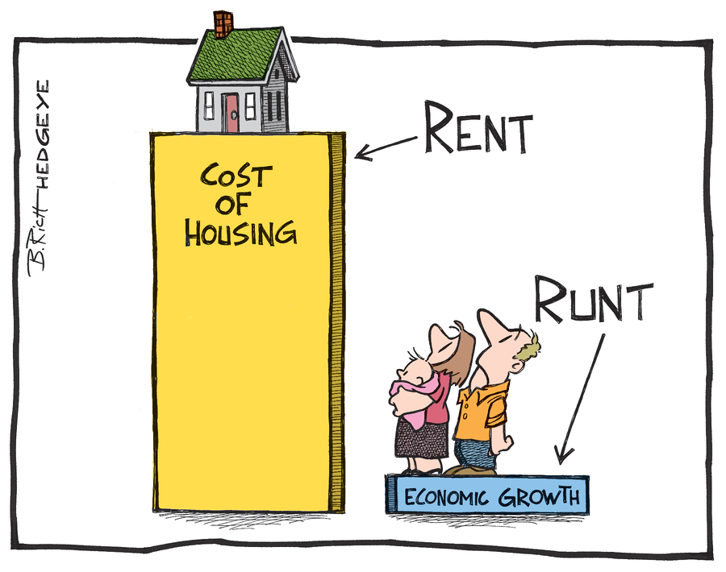
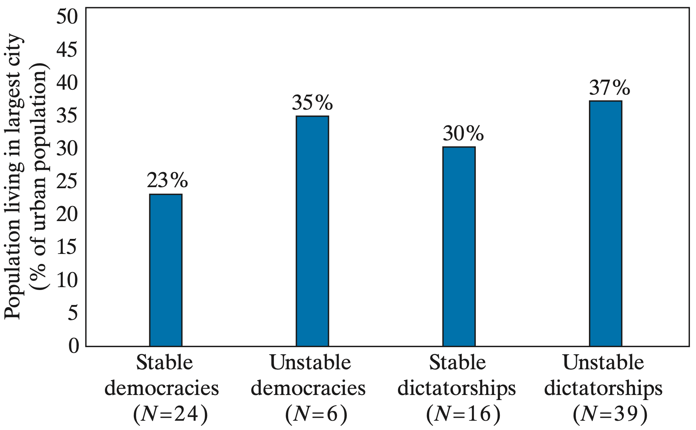

Role of Cities
Cities can be thought of as a massive coordination success
- As distance between consumers and producers increases we see:
- Communication being more difficult
- Transportation becomes more expensive
- Market information is less transparent
- Example:
- Shopping for a car in Portland allows you a lot of opportunity for information
- Shopping for a car in Tillamook can be more difficult with less information
In a city like Portland, there are many car dealerships, private sellers, and online listings within a short distance.
Consumers can compare prices, models, and conditions easily.
There is more competition among sellers, which encourages transparency and better deals.
Buyers can quickly verify information and switch to another seller if needed.
In contrast, in a rural area like Tillamook:
There are fewer sellers and dealerships, so buyers have limited options to compare.
It takes more time and money to travel to other towns to view cars or verify prices.
Because of this isolation, market information is less complete—buyers may not know what a “fair price” really is, and sellers face less pressure to be competitive.
Agglomeration Economies
Definition: Being close to others makes production and consumption cheaper and more efficient than being isolated
There are also spillover effects from agglomeration
1. Knowledge Spillovers
2. Labor Market Spillovers
3. Shared Infrastructure and Services Spillovers
4. Market Access and Consumer Spillovers
5. Social and Institutional Spillovers
def extension: whether across many industries (urbanization) or within the same industry (localization)
Agglomeration Spillovers
1. Knowledge Spillovers
- Skills and ideas spread faster than in isolated rural economies
- Things like observing new production techniques or copying better business practices raise productivity
2. Labor Market Spillovers
3. Shared Infrastructure and Services Spillovers
4. Market Access and Consumer Spillovers
5. Social and Institutional Spillovers
Agglomeration Spillovers
1. Knowledge Spillovers
2. Labor Market Spillovers
- Cities create “thicker labor markets”, where workers and employers can find better matches
- Firms get access to more skilled labor, and workers find more job opportunities
3. Shared Infrastructure and Services Spillovers
4. Market Access and Consumer Spillovers
5. Social and Institutional Spillovers
Agglomeration Spillovers
1. Knowledge Spillovers
2. Labor Market Spillovers
3. Shared Infrastructure and Services Spillovers
- Concentration of firms makes it cheaper for governments to provide roads, electricity, sanitation, and internet access
- Reduces costs for all businesses and supports further investment
4. Market Access and Consumer Spillovers
5. Social and Institutional Spillovers
Agglomeration Spillovers
1. Knowledge Spillovers
2. Labor Market Spillovers
3. Shared Infrastructure and Services Spillovers
4. Market Access and Consumer Spillovers
- Urban areas bring together large groups of consumers, creating bigger and more diverse markets
- Encourages entrepreneurship and specialization
5. Social and Institutional Spillovers
Agglomeration Spillovers
1. Knowledge Spillovers
2. Labor Market Spillovers
3. Shared Infrastructure and Services Spillovers
4. Market Access and Consumer Spillovers
5. Social and Institutional Spillovers
- Cities often become centers for education, finance, and governance
- Urban exposure can change social norms (gender equality, attitudes toward education, or entrepreneurship, etc.)
Agglomeration Example (Sillicon Valley)

Role of Cities
That was a lot of benefits that cities may give
But what about cons?
1. Overcrowding and Housing Shortages
2. Infrastructure Strain
3. Inequality and Informal Employment
4. Environmental Degradation
5. Rising Cost of Living
6. Social and Governance Challenges
Cons of Cities
1. Overcrowding and Housing Shortages
- Rapid inflows of people can overwhelm housing supply, leading to slums and informal settlements
- Overcrowded conditions often lack clean water, sanitation, and electricity
2. Infrastructure Strain
3. Inequality and Informal Employment
4. Environmental Degradation
5. Rising Cost of Living
6. Social and Governance Challenges
Cons of Cities
1. Overcrowding and Housing Shortages
2. Infrastructure Strain
- Cities may grow faster than their roads, public transit, and utilities can expand
- Leading to congestion, power outages, and inadequate waste management
- Governments struggle to finance and coordinate urban planning
3. Inequality and Informal Employment
4. Environmental Degradation
5. Rising Cost of Living
6. Social and Governance Challenges
Cons of Cities
1. Overcrowding and Housing Shortages
2. Infrastructure Strain
3. Inequality and Informal Employment
- Economic opportunities are unevenly distributed. Some residents find good jobs, while many end up in low-paying informal work
- Inequality can deepen between migrants, long-term residents, and social classes
4. Environmental Degradation
5. Rising Cost of Living
6. Social and Governance Challenges
Cons of Cities
1. Overcrowding and Housing Shortages
2. Infrastructure Strain
3. Inequality and Informal Employment
4. Environmental Degradation
- Urban expansion can cause air and water pollution, loss of green spaces, and higher carbon emission
- Poor waste disposal and traffic congestion contribute to environmental stress and poor public health
5. Rising Cost of Living
6. Social and Governance Challenges
Cons of Cities
1. Overcrowding and Housing Shortages
2. Infrastructure Strain
3. Inequality and Informal Employment
4. Environmental Degradation
5. Rising Cost of Living
- As demand for land and services increases, housing, food, and transport costs rise
- The poor may be priced out of central areas, deepening spatial inequality
6. Social and Governance Challenges
Cons of Cities
1. Overcrowding and Housing Shortages
2. Infrastructure Strain
3. Inequality and Informal Employment
4. Environmental Degradation
5. Rising Cost of Living
6. Social and Governance Challenges
- Rapid urbanization can outpace local government capacity to regulate land use, collect taxes, and deliver services
- This can lead to informal governance, corruption, and weak urban institutions
The Issue of Congestion
In the economic sense, we define it as:
An action taken by one agent that decreases the incentives for other agents to take similar actions
- The opposite of complementarity
The Issue of Congestion
The most obvious form of congestion is traffic
As there are more people on the road, the less others want to be on the road A study in Bangladesh estimated traffic congestion to cost the economy $12.5 Billion per year NYC $11 Billion
The Issue of Congestion
A lesss obvious form is rent
- The more people live in a city, the higher the cost of rent
- The higher the rent, the less people want to live there


Colonialism and Urban Development
- Many colonies were used only for resource extraction
- Settlements were set up near resources or export points (coasts)
- Colonizers have little need to build roads linking villages
- All roads lead to the central city (usually on the coast or near bodies of water)
Transportation routes linking industries play a key role
- Urban concentrations appear where transport routes cross
- This emphasizes the lasting impacts of historical events
- When all roads lead to one place, what should we expect to happen to populations of that area?
Senegal
French colony concentrated in Dakar

Pre-colonial: Part of Ghana, Mali, and Jolof empires; active in gold and slave trade routes.
Early contact (15th–17th c.): Portuguese, Dutch, British, and French establish coastal posts; Saint-Louis (1659) and Gorée (1677) become French trading hubs.
French expansion (19th c.): Governor Faidherbe extends rule inland, promotes peanut exports, builds roads/railways; Four Communes gain limited citizenship.
Colonial consolidation (1900–1945): Dakar made capital of French West Africa; assimilation policies spread French language, schools, and culture.
Path to independence: Post-WWII nationalism led by Léopold Sédar Senghor → autonomy (1958) → independence (1960).
Legacy: French language, centralized administration in Dakar, and export-oriented economy remain colonial imprints.
Senegal
Population Concentration

Urban Giantism Problems
There are many potential problems when the majority of the country lives in a single city
- Obviously congestion is a problem
- But we can also experience Urban Bias
- Definition: More resources go to cities than rural areas
- This may also lead to political instability
Concentration of people, power, and opportunity in a single city amplifies inequality and political tension.
In developing countries, where institutions and service capacity are limited, this imbalance often makes urban unrest and regime instability more likely.
Political Instability
